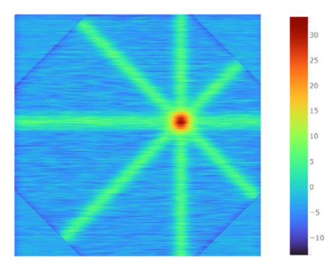

MSC
Qualificação
Atributos de Localização
Visualizações de Dados
Exploração dos Dados
Mapa de Resposta
Resposta Estimada (Justaposição)
Resposta Estimada (Sobreposição)
Próximos Passos
Próximos Passos
Multiplos Canais
Visualização e análise de campos receptivos do córtex visual
Mapa de Resposta Simulado 2D

Mapa de Resposta Simulado 3D
Maior Taxa de Disparo por Orientação
Formato do Campo Receptor